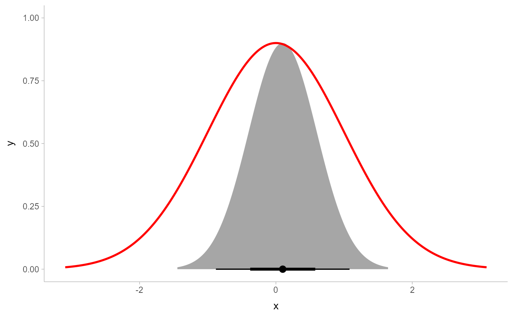

This ggplot2 scale linearly scales all thickness values of geoms
that support the thickness aesthetic (such as geom_slabinterval()). It
can be used to align the thickness scales across multiple geoms (by default,
thickness is normalized on a per-geom level instead of as a global scale).
Arguments
- name
The name of the scale. Used as the axis or legend title. If
waiver(), the default, the name of the scale is taken from the first mapping used for that aesthetic. IfNULL, the legend title will be omitted.- breaks
One of:
NULLfor no breakswaiver()for the default breaks computed by the transformation objectA numeric vector of positions
A function that takes the limits as input and returns breaks as output (e.g., a function returned by
scales::extended_breaks()). Also accepts rlang lambda function notation.
- labels
One of:
NULLfor no labelswaiver()for the default labels computed by the transformation objectA character vector giving labels (must be same length as
breaks)An expression vector (must be the same length as breaks). See ?plotmath for details.
A function that takes the breaks as input and returns labels as output. Also accepts rlang lambda function notation.
- limits
One of:
NULLto use the default scale rangeA numeric vector of length two providing limits of the scale. Use
NAto refer to the existing minimum or maximumA function that accepts the existing (automatic) limits and returns new limits. Also accepts rlang lambda function notation. Note that setting limits on positional scales will remove data outside of the limits. If the purpose is to zoom, use the limit argument in the coordinate system (see
coord_cartesian()).
- renormalize
When mapping values to the
thicknessscale, should those values be allowed to be renormalized by geoms (e.g. via thenormalizeparameter togeom_slabinterval())? The default isFALSE: ifscale_thickness_shared()is in use, the geom-specificnormalizeparameter is ignored (this is achieved by flagging values as already normalized by wrapping them inthickness()). Set this toTRUEto allow geoms to also apply their own normalization.- guide
A function used to create a guide or its name. See
guides()for more information.- ...
Arguments passed to the underlying scale or guide functions. E.g.
scale_thickness_identity()passes arguments tocontinuous_scale(). See that function for more details.- x
An object (typically a
numeric()) to be converted to athickness()object.
Value
A ggplot2::Scale representing a scale for the thickness
aesthetic for ggdist geoms. Can be added to a ggplot() object.
Details
By default, normalization/scaling of slab thicknesses is controlled by geometries,
not by a ggplot2 scale function. This allows various functionality not
otherwise possible, such as (1) allowing different geometries to have different
thickness scales and (2) allowing the user to control at what level of aggregation
(panels, groups, the entire plot, etc) thickness scaling is done via the normalize
parameter to geom_slabinterval().
However, this default approach has one drawback: two different geoms will always
have their own scaling of thickness. scale_thickness_shared() offers an
alternative approach: when added to a chart, all geoms will use the same
thickness scale, and geom-level normalization (via their normalize parameters)
is ignored. This is achieved by "marking" thickness values as already
normalized by wrapping them in the thickness() data type (this can be
disabled by setting renormalize = TRUE).
thickness() is used by scale_thickness_shared() to create numeric()-like
objects marked as being in units of slab "thickness". Unlike regular numeric()s,
thickness() values mapped onto the thickness aesthetic are not rescaled by
scale_thickness_shared() or geom_slabinterval(). In most cases thickness()
is not useful directly; though it can be used to mark values that should not be
rescaled---see the definitions of stat_ccdfinterval() and stat_gradientinterval()
for some usages.
Note: while a slightly more typical name for scale_thickness_shared() might
be scale_thickness_continuous(), the latter name would cause this scale
to be applied to all thickness aesthetics by default according to the rules
ggplot2 uses to find default scales. Thus, to retain the usual behavior
of stat_slabinterval() (per-geom normalization of thickness), this scale
is called scale_thickness_shared().
See also
The thickness aesthetic of geom_slabinterval().
Other ggdist scales:
scale_colour_ramp,
scale_side_mirrored(),
scales
Examples
library(distributional)
library(ggplot2)
library(dplyr)
prior_post = data.frame(
prior = dist_normal(0, 1),
posterior = dist_normal(0.1, 0.5)
)
# By default, separate geoms have their own thickness scales, which means
# distributions plotted using two separate geoms will not have their slab
# functions drawn on the same scale (thus here, the two distributions have
# different areas under their density curves):
prior_post %>%
ggplot() +
stat_halfeye(aes(xdist = posterior)) +
stat_slab(aes(xdist = prior), fill = NA, color = "red")

# For this kind of prior/posterior chart, it makes more sense to have the
# densities on the same scale; thus, the areas under both would be the same.
# We can do that using scale_thickness_shared():
prior_post %>%
ggplot() +
stat_halfeye(aes(xdist = posterior)) +
stat_slab(aes(xdist = prior), fill = NA, color = "#e41a1c") +
scale_thickness_shared()